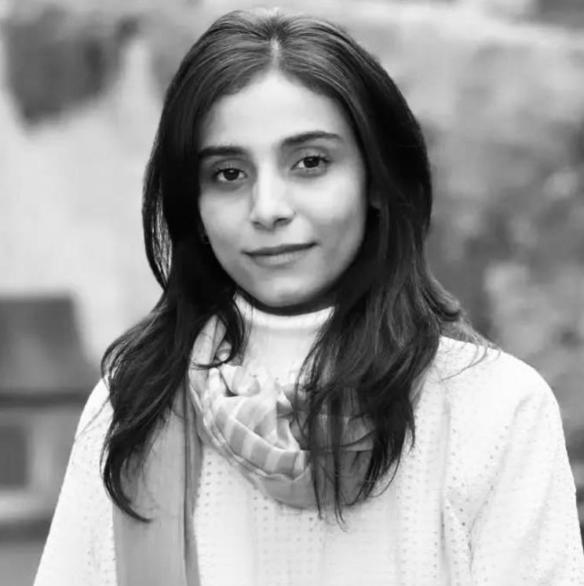
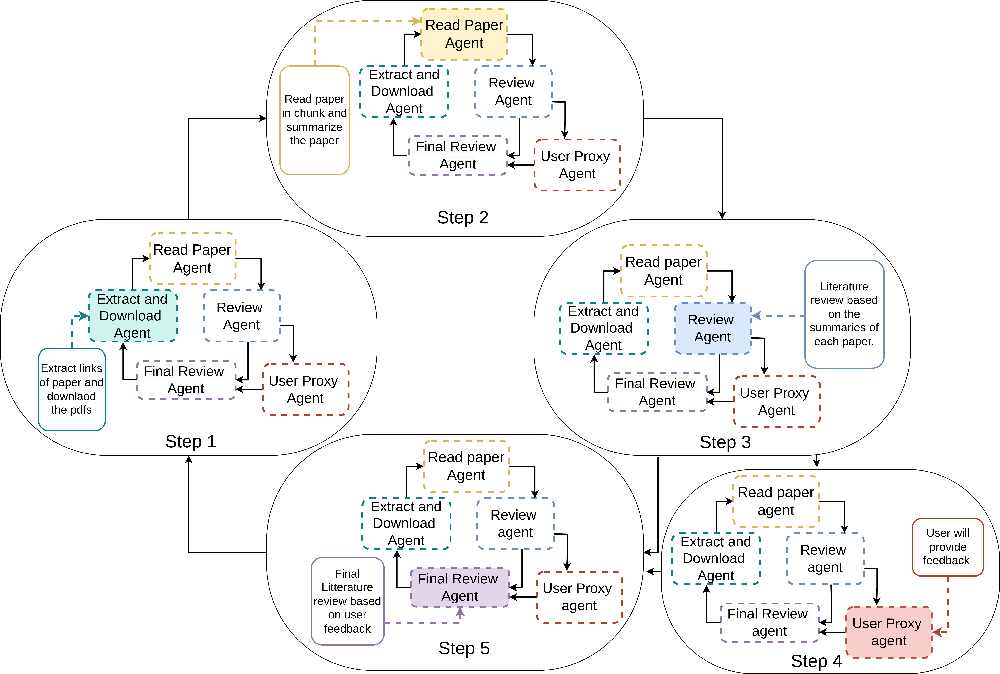
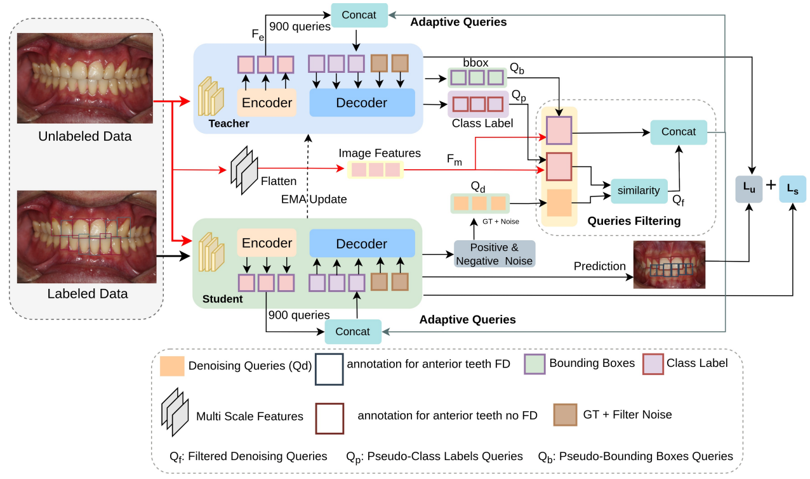
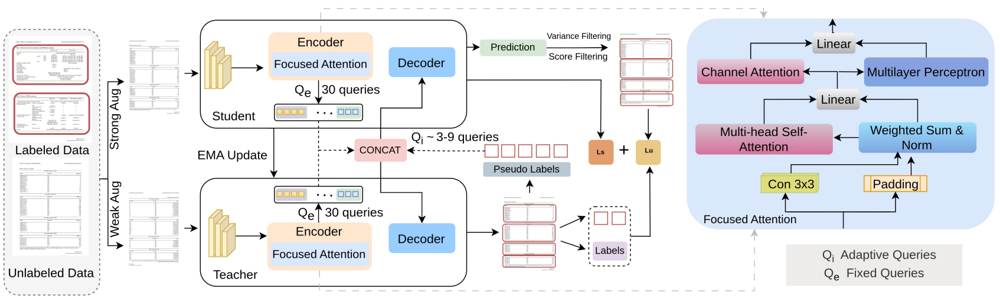
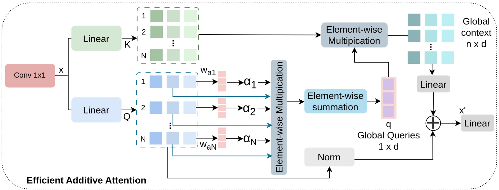
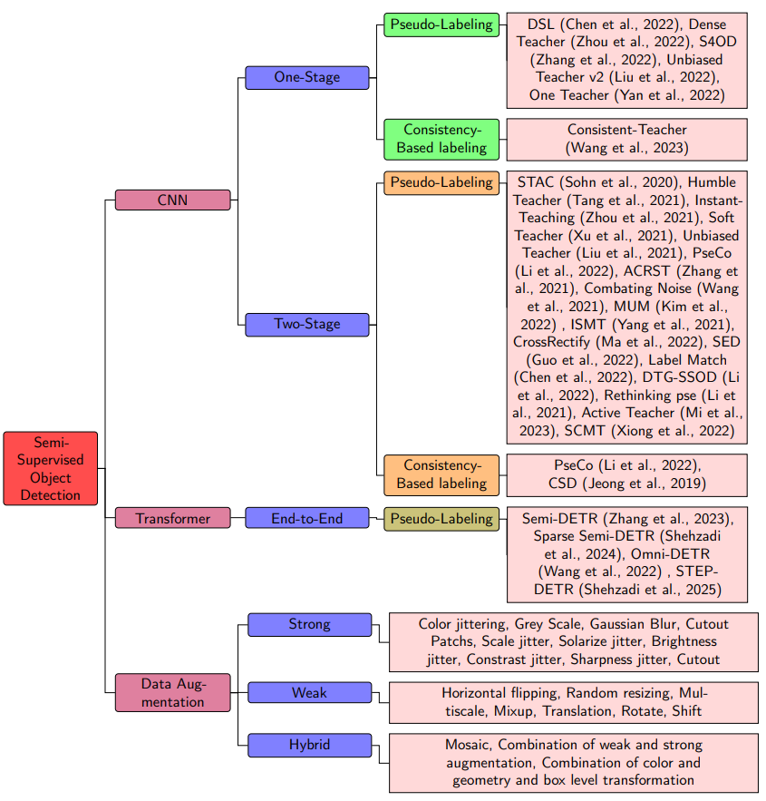
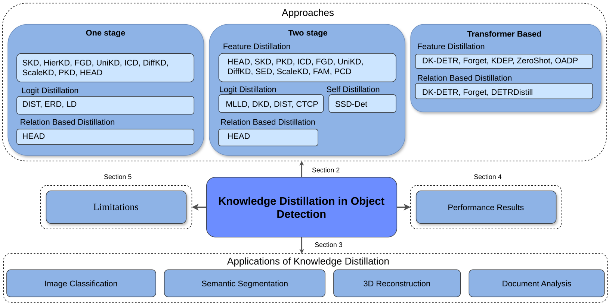

Ifza Ifza
M.Sc. Computer Science | Research Assistant at DFKI

🌙 Dark Mode
About Me
I am a Master’s student in Computer Science at RPTU Kaiserslautern and a Research Assistant (HiWi) at the German Research Center for Artificial Intelligence (DFKI), Kaiserslautern. My research interests include transformer-based object detection, semi-supervised learning, document layout analysis, and medical image understanding. I work on DETR-inspired models and contribute to peer-reviewed publications.
Academic Projects

End-to-End Semi-Supervised Document Layout Analysis (Master’s)
Developed a transformer-based semi-supervised method improving benchmark performance.
Developed a transformer-based semi-supervised method improving benchmark performance.

Literature Review Using Multi-Agent System (Master’s)
Built an LLM-powered pipeline for paper retrieval, summarization, and human-in-the-loop refinement.
Built an LLM-powered pipeline for paper retrieval, summarization, and human-in-the-loop refinement.

Share To Care – Web-Based Donation System (Bachelor’s)
Built a donation platform using ASP.NET MVC and MS SQL Server.
Built a donation platform using ASP.NET MVC and MS SQL Server.
Seminars
Adversarial Attacks to Counterfactual Explanations
Surveyed adversarial approaches for counterfactual explanations focusing on interpretability, robustness, and ethical challenges in trustworthy AI.
Publications
-
FD-SSD FD-SSD: Semi-supervised Detection of Bone Fenestration and Dehiscence in Intraoral Images
T. Shehzadi, I. Ifza, D. Stricker, M. Z. Afzal — MIUA, 2025, pp. 3–14
Paper -
DocSemi
DocSemi: Efficient Document Layout Analysis with Guided Queries
T. Shehzadi, I. Ifza, D. Stricker, M. Z. Afzal — ICCV Workshops, 2025, pp. 7536–7546
Paper -
Efficient Additive Attention
Efficient Additive Attention for Transformer-based Semi-supervised Document Layout Analysis
T. Shehzadi, I. Ifza, D. Stricker, M. Z. Afzal — ICCV Workshops, 2025, pp. 3495–3503
Paper -
Semi-Supervised Object Detection: A Survey
Semi-Supervised Object Detection: A Survey on Progress from CNN to Transformer
T. Shehzadi, I. Ifza, M. Liwicki, D. Stricker, M. Z. Afzal — Sensors, 2026, Vol. 26(1), p. 310
Paper -
Knowledge Distillation in Object Detection
Knowledge Distillation in Object Detection: A Survey from CNN to Transformer
T. Shehzadi, R. Noor, I. Ifza, M. Liwicki, D. Stricker, M. Z. Afzal — Sensors, 2026, Vol. 26(1), p. 292
Paper
Certifications
-
AWS Academy Graduate – Machine Learning FoundationsIssued: June 2025 · Verified via Credly
-
AWS Academy Graduate – Machine Learning for NLPIssued: October 2025 · Verified via Credly